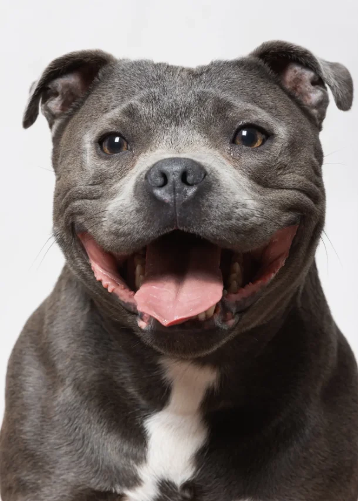
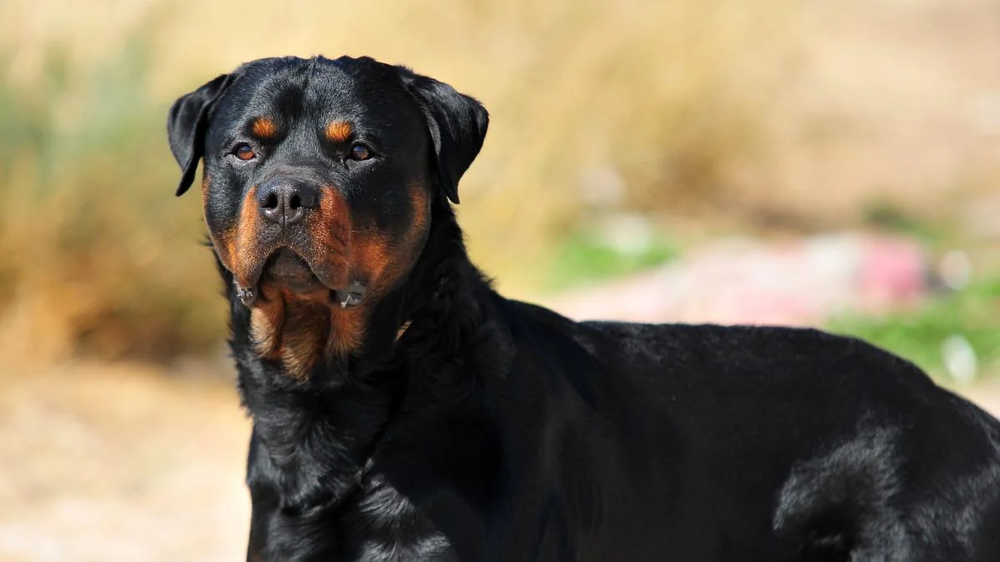
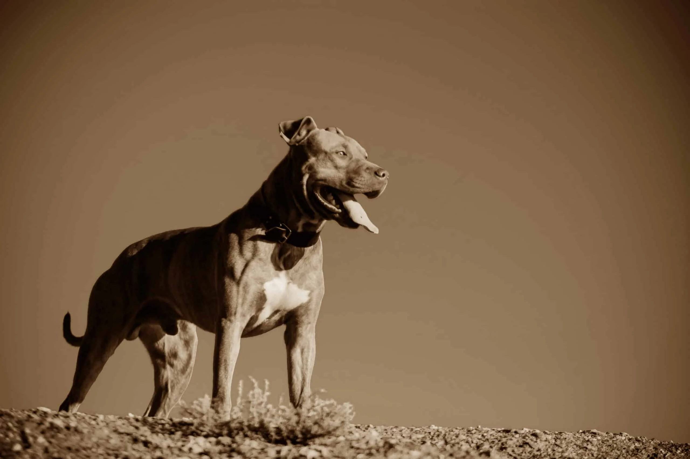
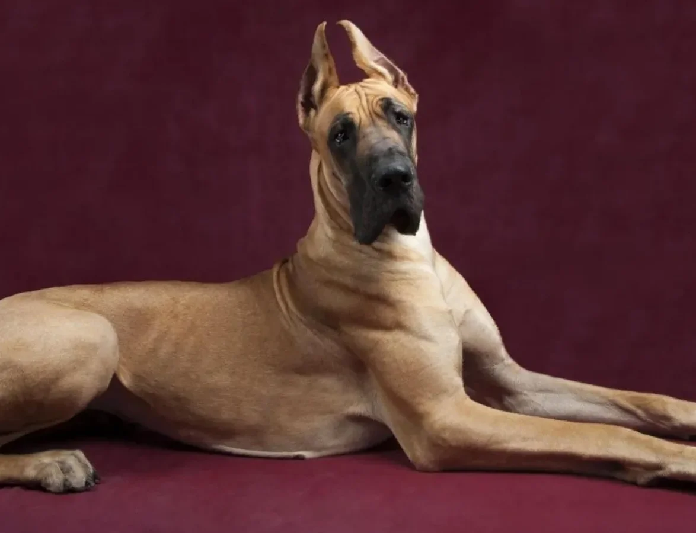
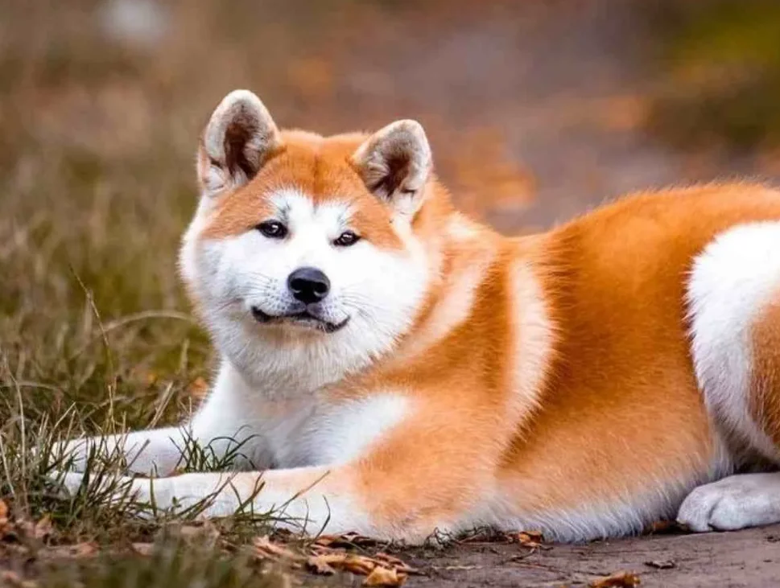

RAZAS
Staffordshire Bull Terrier

El Staffordshire Bull Terrier es considerado presuntamente peligroso
debido a su constitución musculosa y una poderosa mordida de 328 PSI
(libras por pulgada cuadrada), es un perro fácil de confundir con el pitbull
gracias a su gran parecido.
¡Conóceme mejor!
Rottweiler

El Rottweiler es un perro es considerado peligroso debido a su potente
mordida de 328 PSI y su gran tamaño y fuerza, el origen
de esta raza tenía como objetivo el de perros guardianes
y tirar de trineos.
¡Conóceme mejor!
Pitbull

El pitbull es una raza que surgió de la mezcla
de bulldogs y terrier, es un perro atlético, considerado
peligroso debido a su gran tamaño y constitución musculosa,
consta de una mordida con 235 PSI, es un perro protector
capaz de hacerle mucho daño a un intruso.
¡Conóceme mejor!
Gran Danés

El Gran Danés es un perro con mucha energía, grande y con una apariencia
imponente. Son un tipo de raza que llevan mal la soledad en comparación con
otras razas. Este perro es considerado peligroso, con una mordida de
238 PSI, pueden volverse agresivos e inestables sin el cuidado adecuado.
¡Conóceme mejor!
Akita Inu

A pesar de no ser el perro con el aspecto más amenazante de esta página,
el Akita Inu es un perro considerado peligroso con una mordida de 400 PSI,
es un perro típicamente difícil de adiestrar y terco, de ahí los problemas de
comportamiento que pueden derivar en agresividad. Esta raza de perro se volvió
popular gracias a la película "Hachiko".
¡Conóceme mejor!